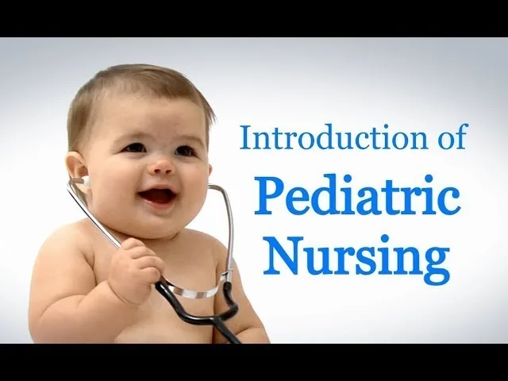
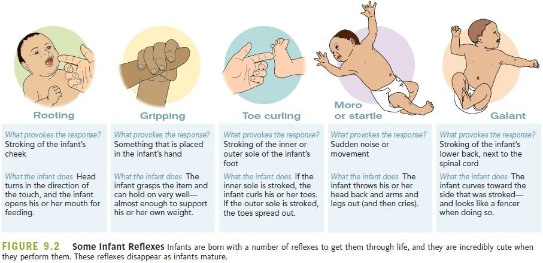

Expanded Nursing Uganda Explanation
Introduction to Paediatrics should be understood beyond a short definition. Link the concept to patient history, focused assessment, common risks, nursing priorities, documentation and evaluation of outcomes.
Contents, 24 sections (tap to expand)
01 Introduction to Paediatric Nursing
Paediatrics is a specialized branch of medicine that focuses on the prevention, diagnosis, treatment, and management of health problems affecting young patients, from infants and children to adolescents. The term originates from the Greek words "paed" meaning "child" and "iatrikē" meaning "treatment." It encompasses not only the clinical aspects but also the psychological and social well-being of the child.
Paediatric nursing requires a deep understanding of genetics, obstetrics, physiological development, management of disabilities, and the effects of social conditions on a child's health. Since a child is entirely dependent on their caregivers, it is essential that the care provided is family-centered . Providing quality care for sick children depends on the nurse's ability to understand the developmental variations anticipated in different age groups.
Paediatrics is a branch of medicine that focuses on the prevention, diagnosis, treatment and management of all types of health problems that affect young patients – from infants and children to adolescents.
It includes the clinical and psychological aspect of medical care. It requires detailed knowledge of genetics, obstetrics, physiological development, management of disabilities at home and school and the effects of social condition on the child’s health.
As the child is totally dependent on the care-givers, it is important that the care provided is family centered. Providing quality care for sick children depends on you, understanding developmental variations as anticipated in different age groups.
02 Principles of Paediatric Nursing
- Family-Centered Care: This approach recognizes the family as the primary source of strength and support for the child. The nurse collaborates with the family in all aspects of planning, delivering, and evaluating healthcare.
- Atraumatic Care: This principle focuses on minimizing the psychological and physical distress experienced by children and their families. It involves using procedures and communication that reduce pain, fear, and anxiety.
- Health Promotion and Disease Prevention: A key focus is on educating families about healthy habits (e.g., nutrition, safety) and preventive measures (e.g., immunizations) to ensure optimal health and well-being.
- Advocacy: The paediatric nurse acts as a voice for the child, ensuring their needs are met and their rights are protected within the healthcare system and the community.
03 Scope of Paediatric Nursing
Paediatric nurses practice in a wide variety of settings, including:
- Hospitals: General paediatric wards, Paediatric Intensive Care Units (PICU), Neonatal Intensive Care Units (NICU), and outpatient clinics.
- Community Health Centres: Providing primary care, health screenings, and immunizations.
- Schools: Managing the health needs of students during school hours.
- Home Care: Providing care for children with chronic conditions or those recovering from illness in their own homes.
04 Roles of the Paediatric Nurse
- Direct Care Provider: Assessing health, administering medications and treatments, and providing hands-on care.
- Educator: Teaching children and families about health conditions, treatments, and self-care.
- Advocate: Protecting the child's rights and ensuring their best interests are served.
- Counselor: Providing emotional support and guidance to children and their families during stressful times.
- Collaborator: Working with doctors, therapists, and other healthcare professionals to create a comprehensive care plan.
05 Rights of the Child in Healthcare
Every child has fundamental rights that must be respected in any healthcare setting. These include:
- The right to the best possible health.
- The right to be cared for by parents or guardians.
- The right to be protected from pain and to receive pain relief.
- The right to be informed in a way they can understand.
- The right to participate in decisions about their care.
- The right to privacy and confidentiality.
06 Antenatal Care
Good antenatal care is important to the future development of the child. Attendance by the mother at maternity clinic at regular intervals during pregnancy will ensure that any problems which may influence fetal development are recognized promptly, as well as providing an opportunity for the mother and father to attend parentcraft sessions, e.g. in breastfeeding, in order to help the parents rear their baby happily and successfully.
07 Fetal Development
Development of the fetus during pregnancy is a time of rapid growth. After fertilization, when the spermatozoon meets an ovum usually in the outer third of the fallopian tube, the cells multiply rapidly into a morula which passes into the uterine cavity and embeds in the endometrium.
After four weeks the fetal shape resembles a mammal and is about 1cm long. By about 8 weeks limbs have developed.
At 12 weeks the fetus is obviously human. The length is now about 9 cm. All essential organs have formed before the twelfth week.
After this the fetus continues to grow, peaking at about the 34th week of pregnancy.
About the 27/28th week the fetus is said to be viable i.e. if born the fetus attempts to breath.
After 28 weeks the fetal muscles develop and fat is laid down. The fetus is coated with a greasy substance known as vernix. The fetus is now able to move quite freely within the amniotic cavity.
End of pregnancy occurs after a gestation period of about 40 weeks.
08 Nursing Goals
- Normalize the life of the child during hospitalization in preparation for the family home, school and community. Example: For a hospitalized child with asthma, the nurse ensures the child's daily routine includes opportunities for play and learning (e.g., child life activities, scheduled playtime), within the limits of their condition, to minimize disruption to their normal life and facilitate easier transition back home and to school upon discharge.
- Minimize the impact of the child’s unique condition. Example: For a child with newly diagnosed Type 1 Diabetes, the nurse provides comprehensive education to the child and family on insulin administration, blood glucose monitoring, and dietary management, empowering them to manage the condition effectively and reduce its interference with daily activities and future development.
- Foster maximal growth and development. Example: For an infant admitted for failure to thrive, the nurse collaborates with dietitians to establish an appropriate feeding plan and implements interventions like structured feeding times and positive reinforcement to ensure adequate nutritional intake, thereby supporting healthy physical growth and cognitive development.
- Develop realistic, functional and coordinated home care plans for the children and families. Example: For a child discharged with a new tracheostomy, the nurse coordinates with social work, home health agencies, and equipment providers to ensure the family has necessary supplies, training, and support (e.g., skilled nursing visits, emergency contact numbers) to safely manage the tracheostomy at home.
- Respect the roles of the families in the care of their children. Example: When caring for a child who requires complex wound care, the nurse actively involves the parents in the dressing changes, teaching them the technique, allowing them to ask questions, and incorporating their preferences (e.g., timing of dressing changes around the child's nap schedule) to foster their sense of control and competence in their child's care.
- Prevention of disease and promotion of health of the child. Example: The nurse administers age-appropriate immunizations as scheduled during well-child visits and provides anticipatory guidance to parents on healthy eating habits, regular physical activity, and injury prevention (e.g., car seat safety, poison control) to protect the child from illness and promote overall well-being.
09 Definition of Terms
Pediatrics: The term pediatrics is derived from Greek words. ‘Paed’ means child, ‘icitrike’ means treatment, ‘..ics’ means the science of child care and scientific treatment of childhood diseases.
Neonatal Period: Neonatal period is the period from birth to 28 days of life or the first month of life.
Normal Baby: A normal baby should have the following characteristics. A normal term baby weighs approximately 3.5 kg, when fully extended measures 50 cm from the crown of the head to the heels, and has an average occipitofrontal head circumference of 34-35 cm. Most babies are plump and have a prominent abdomen. They lie in an attitude of flexion, with arms flexed ; their fingers reach upper thigh level.
Infant: An infant is a child from birth up to one year of life.
Toddler: A toddler is a child from one year to three years of life.
Preschool: A child of three to five years is considered as a preschooler.
Middle Childhood: Is defined as ages six to twelve years.
Adolescent: WHO defines adolescence as the period in human growth and development that occurs after childhood, from ages twelve to nineteen years.
Preterm Baby: A preterm baby is a baby born with a gestational age of less than 37 completed weeks (or less than 259 days) but greater than 28 weeks. These babies are also termed as immature, born early, or premature.
Term Baby: A baby born with a gestational age between 37 to 41 weeks (259-293 days).
Low Birth Weight Baby: Any baby weighing 2500 g or less at birth.
Post-Term Baby: A baby born with a gestational age of 42 weeks or more (294 days or more).
Live Birth: Any signs of life at delivery.
Stillbirth: A baby born after 24 weeks of gestation with no sign of life at birth.
Perinatal Mortality: Stillbirths and first-week deaths per 1000 total births.
Neonatal Mortality: Deaths of live births in the first month of life per 1000 live births.
Infant Mortality: Deaths of all live births in the first year of life per 1000 live births.
Post-Neonatal Mortality: Post-neonatal mortality is referred to as the deaths of all babies from 1 month to 1 year per 1000 babies alive at 1 month.
10 Characteristics of a Normal Newborn
A normal newborn (0-28 days) exhibits a unique set of physical and behavioural characteristics as they adapt to life outside the womb.
11 The Newborn
A newborn is a just or recently born child (0-28 days).
12 Physical Characteristics
Weight: The normal full-term infant weighs approximately 3.5 kgs. In Uganda, the weight may range from 2.5 kg-3.5 kg. Babies in the tropics tend to be smaller than European babies. Newborn infants usually are considered to be tiny and powerless, completely dependent on others for life.
Length: Measurement is taken from the highest point of vertex of the head to the heel. It ranges from 45-50 cm (average 50cm).
Lie: He lies in an attitude of flexion – in the supine position with his head turned to one side and one shoulder elevated off the mattress or in the prone position with his buttocks elevated, his knees drawn up under his abdomen and his head turned to one side with his arms extended; his fingers reach to mid-thigh level.
Temperature: Ranges between 36°C to 37.5°C
Blood Pressure: Systolic 50 to 75mmHg and Diastolic 30 to 45mmHg
Nails: The nails are fully formed and adhered to the tips of the fingers, sometimes extending beyond the fingertips.
Head and Hair: The head circumference is approximately 33-35 cm (13-14 in) with a cranium that is disproportionately large compared with the face. This is from molding of the skull bones during labor and birth or due to swelling of the scalp or slight bleeding under the scalp. The anterior and posterior fontanels or “soft spots” are open and the sutures can be felt. The anterior fontanel is diamond-shaped and closes by 18 months. The fontanel on the back (posterior) is shaped like a triangle and closes by 6 weeks of age. The baby may be born with a full head of hair or none at all.
Arms and Legs: After birth, the baby’s arms and legs may look bowed and are held close to the body. Hands are in tight fists, the arms and legs may appear too short for the body because of their bent appearance. This is temporary; by 3 to 4 months, the arms and legs stretch out.
13 Sensory Development
Vision: The baby’s eye color depends on skin tone, blue-gray if fair-skinned or brown if dark-skinned. By 6 months to 1 year of age, the baby’s eye color will be permanent. Eyes: When the newborn cries, tears may be absent. Tear ducts may not function for the first few weeks after birth. Cross-eyed: A newborn’s eye muscles are weak at birth. Over the next few weeks, eye muscle strength will improve, and the baby can better focus on objects.
Hearing: Babies can hear loud and soft noises at birth. Loud noises may cause the baby to startle, while soft noises may help to calm your baby. The baby quickly learns the difference in voice sounds. The baby will turn its head to a familiar voice, especially mom’s and dad’s voice.
Taste and Smell: Newborns can taste and smell at birth. The baby will be able to taste breast milk.
14 Skin and Body Systems
Skin: At birth, the baby may have a thick cheese-like covering. This is called vernix caseosa. Vernix helps to protect the baby’s skin while in the uterus. Over the baby’s forehead, nose, and cheeks, you may see “whiteheads” or milia. These are immature oil glands that will go away in several weeks. The baby may have soft downy hair that may cover its face and body. This is called lanugo, and it will go away within a few weeks after birth. The baby may have pale pink marks on the face and neck. They are called stork bites and will fade during childhood. The baby may have bluish-black marks on the lower back or bottom. These are called Mongolian spots and are more common on dark-skinned children. The subcutaneous fat is small and the skin looks red and elastic.
Chest and Breathing: Babies take little breaths and use abdominal muscles to help breathe. You may even notice short pauses between some breaths. The rate of breathing is 30 to 60 times a minute. This is because their heart rate is rapid at 120 to 160 times a minute. The breasts of boy and girl babies may look enlarged after birth. The hormones that cross the placenta during the last two weeks before birth cause the breasts to fill with milk. Do not squeeze the breasts. The enlarged breasts will go away in about 2 weeks.
Abdomen: The abdomen may be round or stick out slightly (big compared to the thorax). The umbilical cord is clamped, cut, and tied. It will dry and fall off in 1 to 2 weeks. If there is redness around the umbilical cord or pus-like drainage, give the necessary care.
Genitalia: In boys, the testicles are descended into the scrotum which has plentiful rugae. The urethral meatus opens at the tip of the penis, and the prepuce is adhered to the glans. In girls born at term, the labia majora normally cover the labia minora. The hymen and clitoris may appear disproportionately large. The hormones in a girl may cause the baby to have white vaginal discharge or vaginal spotting (false period).
15 Behavior
Behavior: The newborn baby will probably spend a lot of time sleeping. The baby may be very alert and gaze at the mother or people or be very quiet and drowsy right after birth. During the next month, the baby will spend less time sleeping and more time awake.
16 Physical Characteristics
- Weight: A normal full-term infant weighs approximately 3.5 kg. In Uganda, the range is typically 2.5-3.5 kg.
- Length: Measured from crown to heel, the average length is 50 cm (range 45-50 cm).
- Lie/Posture: The newborn typically lies in a flexed position, with arms and legs bent and held close to the body.
- Head: The head circumference is 33-35 cm and appears large in proportion to the body. The anterior fontanelle (diamond-shaped) and posterior fontanelle (triangular) are soft spots on the skull that are open at birth.
- Temperature: Normal range is 36.5°C to 37.5°C.
17 Skin
- Vernix Caseosa: A thick, white, cheese-like substance that covers and protects the fetal skin in utero. It is gradually absorbed after birth.
- Lanugo: Fine, soft, downy hair that may cover the body, especially on the shoulders and back. It disappears within a few weeks.
- Milia: Tiny white bumps (plugged oil glands) often seen on the nose and cheeks, which disappear on their own.
- Mongolian Spots: Bluish-black marks, resembling bruises, commonly found on the lower back or buttocks of dark-skinned babies. They are harmless and fade over time.
18 Chest and Abdomen
- Breathing: Newborn breathing is primarily abdominal, with a rate of 30-60 breaths per minute. Short pauses (periodic breathing) are normal.
- Heart Rate: The heart rate is rapid, ranging from 120-160 beats per minute.
- Umbilical Cord: The stump is clamped at birth. It will dry, harden, and typically fall off within 1-2 weeks. It should be kept clean and dry to prevent infection.
19 Genitalia
- Due to maternal hormones, the genitalia of both boys and girls may appear swollen.
- Girls: May have a white vaginal discharge or a small amount of bloody mucoid discharge (pseudomenstruation), which is normal.
- Boys: In a full-term male, the testes have descended into the scrotum, which has folds (rugae).
20 The Common Reflexes Observed in the Newborn
A reflex is an automatic or voluntary response to a stimulus, which is brought about by relatively simple nervous circuits without consciousness being necessarily involved. They include:
- Pupil Reflexes: The newborn infant will turn his head towards the source of light, providing it is not too bright.
- Moro Reflex (Startle): Response to sudden stimulus or sound causing the infant’s body to stiffen, the arms to go up and out, then forward and towards each other. This reflex usually disappears at about the age of 3-4 months and may be difficult to elicit in a preterm baby.
- The Grasp Reflex: This may be obtained in the hand or foot by either introducing a finger into the palm of the hand, which the infant grasps quite strongly, or by gently stroking the sole of the foot behind the toes.
- Rooting Reflex: When the corner of the mouth is touched with a finger which moves towards the cheek, the infant will turn his head towards the object and open his mouth.
- Withdrawal Reflex: Pricking the sole of the foot will result in the infant’s leg being flexed at the hip, knee, and ankle.
- Babinski Reflex: This occurs when the sole of the baby’s foot is stimulated. This has an effect of causing an unusual extension of the big toe as well as fanning the other toes. The simulation may be started from the heel all the way to the base of the baby’s toes. This reflex is normally used to ascertain the adequateness of the central nervous system.
- Sucking and Swallowing Reflexes: This is essential for safe feeding and adequate nutrition. Place a nipple or finger in the mouth of the baby, the infant should suck vigorously and swallow.
- Traction Response: When the baby is pulled upright by the wrists to a sitting position, the head will lag initially, then right itself momentarily before falling forward onto the chest.
- Blinking and Corneal Reflex: This protects the eyes from trauma.
- Walking and Stepping Reflexes: When the baby is supported upright with his feet touching a flat surface, the baby simulates walking. If held with the tibia in contact with the edge of a table, the baby will step up onto the table.
- In your own words, what is family-centered care and why is it a core principle of paediatric nursing?
- Differentiate between a 'preterm baby,' a 'term baby,' and a 'low birth weight baby.'
- A mother is worried about the fine, soft hair (lanugo) and the tiny white spots (milia) on her newborn's face. As a nurse, how would you explain these findings to her?
- Describe the Moro reflex. What is its significance, and when does it typically disappear?
- List three distinct roles of a paediatric nurse and provide a practical example for each role.
- What is pseudomenstruation in a female newborn, and what causes it?
21 Nursing Uganda Clinical Lens
Use Introduction to Paediatrics as a practical nursing topic, not only a memorized definition. Adapt assessment and care to age, weight, development, caregiver knowledge and family support.
- What to understand first: define introduction to paediatrics, identify the normal or expected pattern, then explain what changes when the patient is unwell.
- Why it matters in care: the nurse must recognize risk early, explain findings clearly, document accurately and know when to escalate.
- How to revise it: connect each point to assessment, nursing diagnosis or care problem, intervention, rationale and evaluation.
22 Assessment Guide
- Airway, breathing, circulation, hydration, temperature, feeding, activity and danger signs.
- Weight-based medicines, immunization status, growth, development and caregiver concerns.
- Signs that may be subtle in children, including lethargy, poor feeding, fast breathing or convulsions.
23 Nursing Priorities, Rationales and Outcomes
- Use age-appropriate communication and involve the caregiver.
- Prevent dehydration, hypothermia, medication errors and delayed referral.
- Teach home care, danger signs and follow-up clearly.
The rationale for these priorities is patient safety: nursing actions should prevent deterioration, reduce discomfort, support recovery and create clear evidence for the next caregiver.
- Expected outcome: The child is clinically improving, caregiver instructions are understood and follow-up is arranged.
24 Patient Teaching and Revision Check
- Explain introduction to paediatrics in simple language the patient or caregiver can repeat back.
- Teach warning signs, medicine or follow-up instructions, hygiene or lifestyle points where relevant.
- For exams, prepare a short answer using: definition, causes or risk factors, signs, assessment, management, complications and prevention.
- For ward practice, document baseline findings, actions taken, patient response and the plan for review.
Illustrations and Diagrams (7)




Related Video Lectures
Watch nursing lecture videos on YouTube for this topic. Opens in a new tab.
Watch on YouTubeExternal link: YouTube may use its own cookies and terms. Nursing Uganda is not affiliated with YouTube.